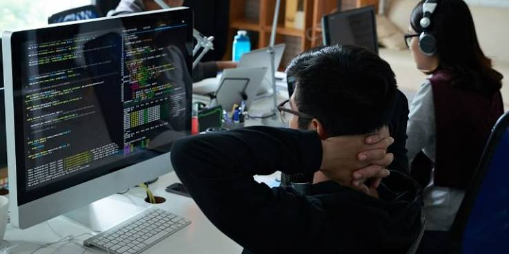

Mahasiswa D3 Teknik Informatika Gelar Lakakarya Web Dasar

Rangkaian Kegiatan
Peserta menyusun halaman profil, memperbaiki kesalahan HTML, menerapkan CSS, dan mempresentasikan hasil melalui code defense singkat.
Latar Belakang
Kegiatan diselenggarakan untuk memperkuat fondasi sebelum mahasiswa mempelajari framework dan pengembangan aplikasi yang lebih kompleks.